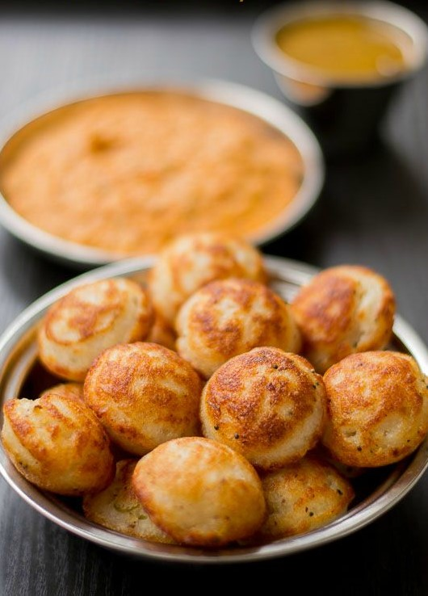

“It’s a big world out there, go explore.”
The art and culture are so deeply embedded in Tamil Nadu that as a tourist here, you have plenty of experiences to relish. Welcome to Tamil Nadu! The land where the tales and influence of Cholas, Pandyas, and Pallavas can still be seen and the beaut landscape, sacred temples, and imposing wildlife make you feel instantly connected with this tourist destination in India. While we mostly focus on the cultural side of this travel place located in South India, there is an urban vibe that we must endeavour to sight occasionally. The capital city, Chennai and several other cities in the state offer a delightful blend of modern and ancient, and thus, give any traveller a chance to revel amidst the fusion. The geography of the state makes it an unsurpassed gift for the nature lovers. From its western fronts where it enjoys the company of the lush Western Ghats to its east coast that is adorned by a long coastal stretch and an island of Rameswaram, Tamil Nadu has plenty of tourist attractions dotting its length and breadth. Then there are copious things to do that further enhance your experience at this impeccable destination in India. Indeed, Tamil Nadu is an inviting tourist place the travel guide of which promises delightful experiences to cherish.
In fact, the state opens its doors to those who are willing to get a new perspective without being skeptical about anything. Therefore, if you are visiting Tamil Nadu, you need to accept a different take on spirituality and culture. Yes, it is the land of Lord Murugan and Goddess Meenakshi but then it is also the abode of Mother Mary and the resting place of St. Thomas.

Tamil Nadu has a long and illustrious history that dates back thousands of years. The Dravidians of Tamil region are said to have been part of the early Indus Valley inhabitants who went south when the Aryans arrived around 1500 BC. Human civilization in Tamil Nadu, on the other hand, only dates back to the 4th century BC. Several references to the social, economic, and cultural life of people in this region may be found in Sangam literature. Even before the Christian era, the Tamil Country's proximity to the sea placed it on the world's maritime map. The Tamils established trading relations with ancient Egypt, Greece, and Rome over time.
The Tamils, who beat for the little joys they find at festivals that the state celebrates with pride are independent but together. It is a country which respires in the natural aura of culture and tradition, with a glimpse in rituals and a hearty worship in which people dwell. Whether it is the religious, art or the seasonal and mountain festivals, they confront something bizarre and yet fantastic that cannot overlook the vibrant festivities of their exotic gopurams. Even in its own authentic way Tamilnadu welcomes the new year. Being faithful in the Tamil saying 'thai piranthal vazhhi pirakkum,' that means all the concerns will disappear with the arrival of Thai(January), and peace, love, harmony and prosperity will be everything else. In early January Thai Pongal takes place one of the Sun Lord of Tamilnadu's most popular harvest festivities. This 4-day festival is famous for a traditional bull taming event called Jallikattu. The third day, namely Mattu Pongal, is celebrated when a bull is released before a horde of people trying to get the bull's back so long as possible.
A vacation is never complete without shopping, especially when you're in a state of souvenirs, Tamil Nadu. For all shopping fanatics, it is one of the best places in India to snap up the famous traditional arts of the region. The state holds a massive stockpile of embroidered sarees, especially Kanchipuram Silk, which is popularly known for mulberry silk and variance borders. Floral, stripes, checks, and temple borders are the popular design embedded in Kanchipuram Sarees. Local handicrafts of various cities and towns are also amongst the must things to buy in Tamilnadu which include Metalware in Chennai; Woodcraft in Chennai, Madurai, and Coimbatore; and Textile in Salem, Coimbatore, and Tirupur. Above that, Thanjavur - one of the best shopping places in Tamilnadu, lures a large number of art and music buffs as it is a home to famous Tanjore Paintings, metal arts, and as well as musical instruments.
Tamil Nadu has always been a hub for food connoisseurs to take a great pleasure of some of the finest traditional cuisine in the country. The state is reckoned to be one of the best places in India for offering a bagful of culinary treasure for tourists to savour. But, the fascinating things about Tamil Nadu is the touch of their customary culture which is served with its every delectable fare. Idli, Sambar, Dosa, Uttapam, and Vada are just a few names whenever it comes to popular South Indian food. The region is known to offer a wide variety of both vegetarian and non-vegetarian dishes with each holding a unique flavoursome taste. These includes payasam, biryani, chicken chettinad, rasam, mutton curry coconut chutney, parotta, curd rice, upma, lemon rice and much more. Along with the main course, the snacks and side dishes in Tamilnadu too proffer an astringent taste. Murukku, Banana Chips, Bonda, Appalam, and Green Gram Sprouts (Moong) are some snacks and side dishes which also should be added to your list of must-try food in Tamilnadu. Not to forget, the state also bids an extensive range of tea, coffee, banana and coconut, which together with other fares, makes Tamilnadu one of the best food getaways in India.